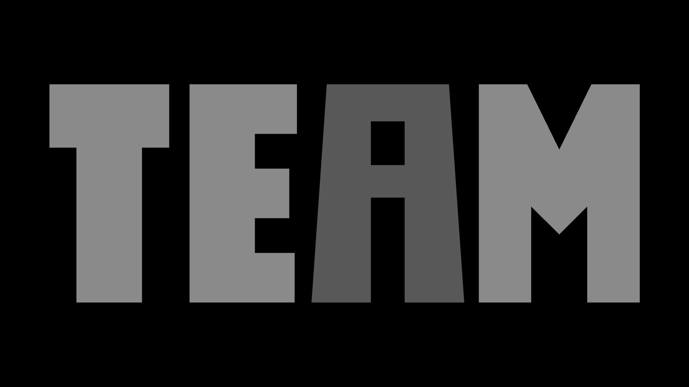

SO7O BRUT
THE QUICK BROWN FOX JUMPS OVER THE LAZY DOG
Capitals · 26
Numbers · 10
A display typeface cut out of one image. The four letters in
assets/team-source.jpg are measured, scaled
into a 700 unit cap height, and used as the grammar for everything
else. Monolithic slabs, rectangular punched windows, no curves
anywhere. Lowercase is mapped onto the capitals, so it sets unicase.
THE QUICK BROWN FOX JUMPS OVER THE LAZY DOG
THE QUICK BROWN FOX JUMPS OVER THE LAZY DOG
THE QUICK BROWN FOX JUMPS OVER THE LAZY DOG
THE QUICK BROWN FOX JUMPS OVER THE LAZY DOG
THE QUICK BROWN FOX JUMPS OVER THE LAZY DOG
THERE IS NO I IN TEAM. Concrete pours into the formwork, sets, and the wall stays standing for sixty years. The letters do the same job: heavy, flat, honest about the material.
NO CURVES WERE HARMED. Every corner is square or cut at 45 degrees. Anything that would have been round is chamfered into an octagon, the counters are windows punched through the slab, and nothing is traced from a commercial face.

# rebuild the fonts and the SVG data pip install fonttools python3 build.py # writes site/fonts/So7oBrutSlab-Regular.ttf site/fonts/So7oBrutSquare-Regular.ttf site/fonts/So7oBrutCondensed-Regular.ttf site/fonts/So7oBrutWide-Regular.ttf site/assets/glyphs.json
build.py holds every glyph as a polygon.
Squeeze or widen a letter there and the change lands in the fonts, in
the specimen, and in the SVG maker at once: the site reads
glyphs.json, never a pre-baked outline.
Every push to master rebuilds the fonts in
GitHub Actions and deploys this site.